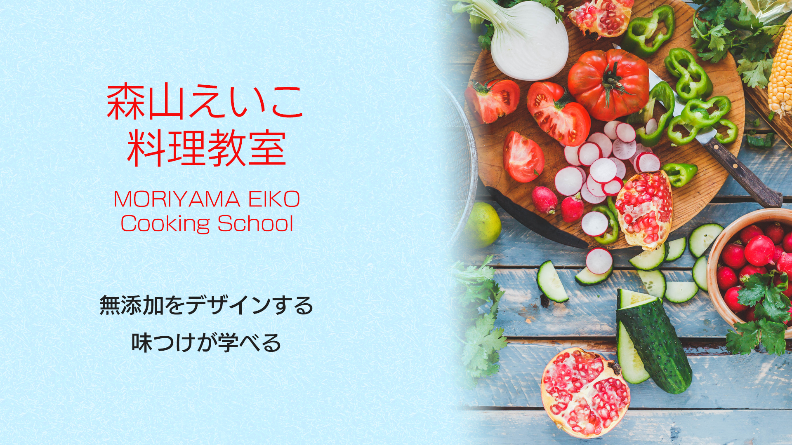

- 
4つのポイント Features
-
分かりやすい EASY-LEARNING
美味しくなる仕組みをお伝えします。
なぜそこで砂糖を入れるのか、塩のタイミングまで料理の本質を習得できます。一人一人のつまずいている所を見極めどう解決すればうまくいくのかを実践します。ブライダルの方にも将来の幸せを堅実に手に入れて頂いております。 -
身につく HIGHLY MEMORABLE
冷蔵庫にある素材で美味しく作る練習をします。レシピで習得しないため、ご家庭でも実践的で、即効性のある料理上手に導きます。
-

上達保障 IMPROVEMENT GUARANTEED
返金保証制度の導入で安心して初めていただけます。卒業がある料理教室で講師が生徒様の目標ゴールに向けて懸命に伴奏します。
-
クラス紹介 CLASSES
学びなおしクラス：長年料理をされてきた主婦歴の長い方
料理初心者クラス：超初心者、料理歴数年初心者（料理歴年に関わらず、料理の本質をご存じない方はすべて対象）
各レッスンについて Lesson's summary
オンラインレッスン
- 方法
- Zoomによるリモートテレビ通話
- 電話番号
- 012-3456-7890
- 日程
- 日程については個々に相談させていただきます（2024年1月現在）※相談については24時間対応させていただきますレッスン対応時間：9時より22時まで対応可能
- サポート
- 無制限にて行っております
- お問合せ
- お問い合わせフォームにてお問合せください。

対面レッスンについて
- 所在地
-
〒486-0845
愛知県春日井市瑞穂通３丁目８８ - 電話番号
- 012-3456-7890
- アクセス
- 名古屋駅から乗り換えなしJＲ勝川駅２０分（どんな電車でも止まります） 勝川駅より２ＫＭ
- 駐車場
- 車でお越しの方は 東名高速 春日井ICより４.４KM 名二環 勝川ICより２.８KM （大駐車場完備１４台）
- お問合せ
- お問い合わせフォームにてお問合せください。